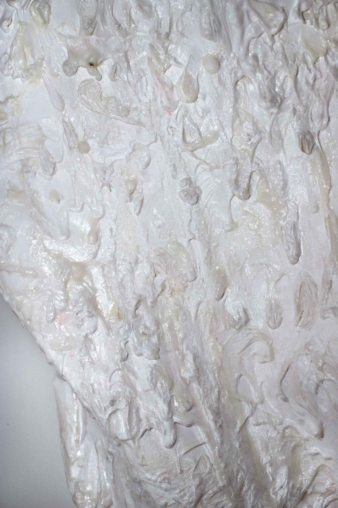
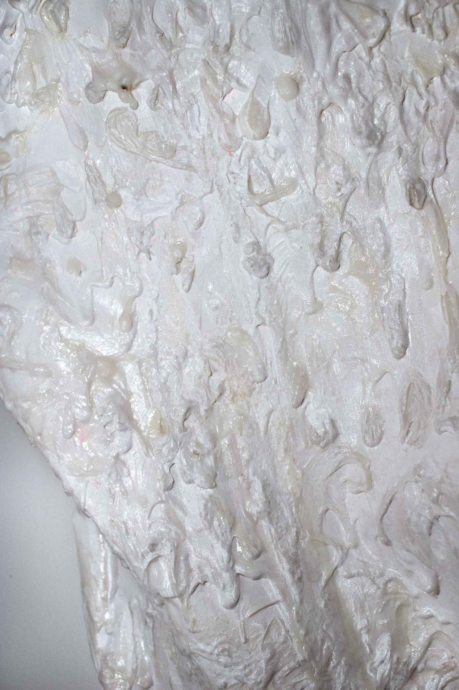

This painting is, first and foremost, a form of play.
I want to start a conversation with my body, not physically but emotionally and spiritually. Sex as an act is overwhelmingly visceral. It makes me think of my body as not my own but also completely inseparable from me. The lack of control and predictability is scary for me. It’s an intimate act that I’ve struggled to participate in.
This painting is not just about cum but also about the act and process. It’s about my body and its limitations. It’s about body dysmorphia and dysphoria. It’s about having a body and using it. It’s about connection and formation. It’s about intentional movement and unintentional contact.
This was a sculptural experiment in understanding how canvas can be shaped.
This was a mental experiment in understanding how I wanted to be perceived. This painting is about seeing and feeling pleasure in things, not of the body. Yet, it is about seeing and feeling the pleasure of the body.
This painting is my body and cum on it. This painting is about anyone who has seen me and recognized me as a man. It’s about feeling uncomfortable with having a penis. It’s about feeling like you can’t be a woman but not a man. It’s about wanting a penis and a vagina at the same time. It’s about bottom surgery. It’s about wanting it and needing it and being ok with not having it and not feeling like you need it. It’s about feeling more comfortable with my penis. It’s about my genitalia.
It’s about sperm. It’s about feeling your whole body at the same time. It’s about masturbation.
It’s about sharp. It’s about hot. It’s about turning myself inside out. It’s about warm. It’s about wet. It’s about sticky.
It’s about everything and nothing. It’s about painting, and it’s about not painting in 3 years. It’s about feeling so disconnected from why I painted.
It’s about being queer. It’s about imposter syndrome. It’s about feeling like you’re just faking it. It’s about pretending to be the artist you think you should be instead of being the artist you want to be.
It’s about feeling so alone. It’s about finding yourself and experiencing work that actually makes you feel. It’s about loving your body and loving your work. It’s about showing other people. It’s about the experience I’m creating for myself. It’s about showing up for myself. It’s about not being afraid. It’s about doing the damn thing.
It’s about being a good friend. It’s about allowing others to be here with me. It’s about being closer to my friends. It’s about learning who I am.
It’s about spending money, and it’s about being rich and poor at the same time.
It’s about thinking that I wouldn’t make it this far. It’s about not knowing the future and being cripplingly afraid of it. It’s about being confident.
It’s about me.
It’s about sex and love and latex and curved and carves and bodies and warmth.
It’s about being connected to some (or myself).
It’s about passion. It’s about patience. It’s about love. It’s about pressure. It’s about the heat. It’s about looking. It’s about pulling and pushing.
It’s about friction. It’s about jumping. It’s about freedom.
It’s about breathing. It’s about exhaling. It’s about sitting. It’s about staring. It’s about sleeping. It’s about moving and turning and flipping. It’s about drifting. It’s about softness. It’s about nothing. It’s about cum.
2021-21, painting, acrylic gel medium and gesso.
{kind=link}
{kind=link}
{kind=link}
{kind=link}
{kind=link}
{kind=link}